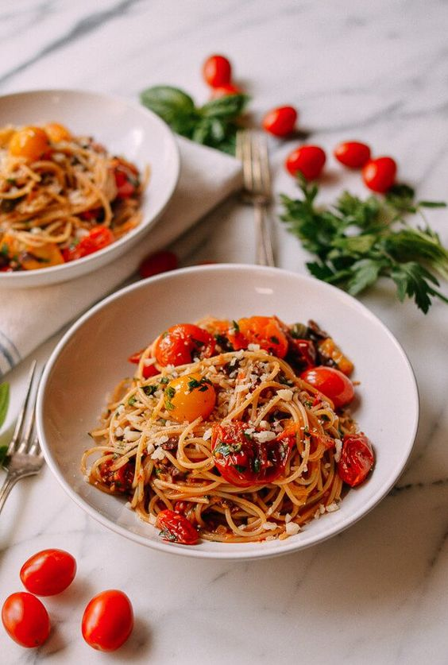

Odin's Special Spaghetti

Description
Odin's Special Spaghetti is a special recipe created after Odin watched a sad show. His tears were used
to boil the water, and the dough was made from the Earth in Olympus. The taste of the spaghetti has
been described as "beautifully woesome", the aroma has been said to have enticed Zeus himself.
Ingredients:
- Oil: This traditional Italian recipe starts with olive oil.
- Guanciale: Buy guanciale (or cured pork cheek) at your local butcher. If you can’t find it,
you can substitute unsmoked bacon or pancetta.
- Spaghetti: Use store-bought or homemade spaghetti noodles. If you like, you can substitute
bucatini for the spaghetti.
- Eggs: Three large eggs add richness and flavor.
- Cheese: Opt for hand-shredded Pecorino Romano cheese. You can substitute Parmesan, if preferred.
- Seasonings: This flavorful spaghetti alla carbonara is simply seasoned with salt and pepper.
Steps:
- Cook the pork in olive oil until browned and crispy, then drain on paper towels.
- Boil the spaghetti in salted water. Drain and return to the pot. Let cool.
- Whisk the eggs, 1/2 of the cheese, and some pepper in a bowl until smooth.
- Pour the egg mixture over the pasta, stirring quickly, until creamy.
- Stir in the pork, then top with the remaining cheese and more black pepper.